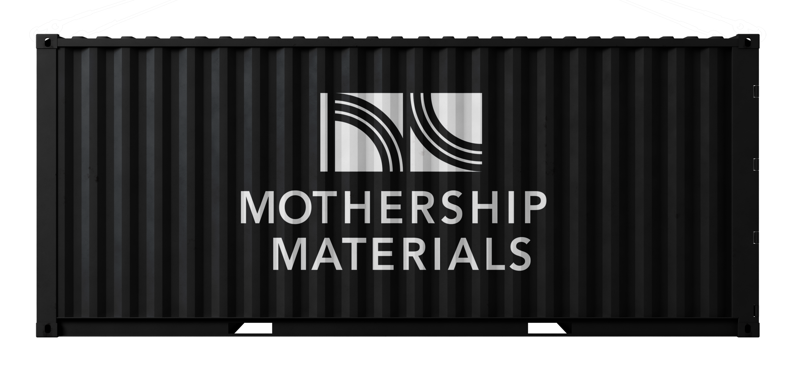
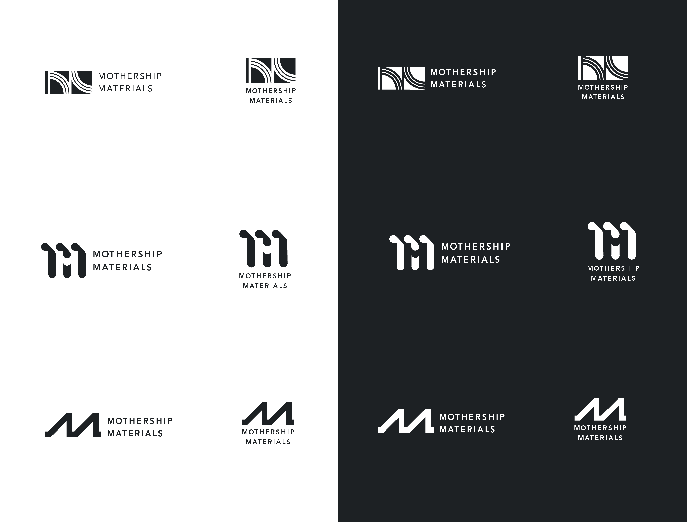

Mothership Materials
Mothership Materials is a unique company that converts agricultural and food processing waste into affordable bio-based raw materials using a physical molecular sorting process. It's a company defined by heavy industrial infrastructure in service of something regenerative and earth-facing. The identity needed to hold both the solidity of steel containers and the fluid, transformative process happening inside.

Explored Concepts

Option 1
This mark uses circular lines to reference the cycle of material as it's gathered and transformed. The flow mimics the movement that occurs as waste is processed through the pipes. It's a more organic take on the "M," built less on structure and more on process. Rather than chasing a trend, it appears valuable and established. Look closely and the mark holds two "M"s: one traced directly in the white lines themselves, and a second hidden just beneath it in the negative space.
Option 2
This option resembles the pipes within the shipping container. Rather than one continuous line, it's separated into three, a nod to the the way waste itself is sorted into different categories as part of the process. There are also multiple circles that appear in the mark, a fundamental shape of the technology. Both "M"s are easily legible with the first being made with the three strokes above and the second below in the negative space. It is simple, yet clever, and built for a company that isn't dressing up its process, but standing behind it plainly and confidently.
Option 3
This option strips the "M" down to its most basic form. It is built with a series of clean, angular strokes that echoes the pipes at the core of the process. There's nothing frilly or decorative about it; every line serves a purpose, and that restraint is exactly what gives the mark its strength. It reads as simple and timeless rather than trend-driven, the kind of mark that could have existed decades ago and will still hold up decades from now. That straightforward, unembellished quality translates directly into trust.